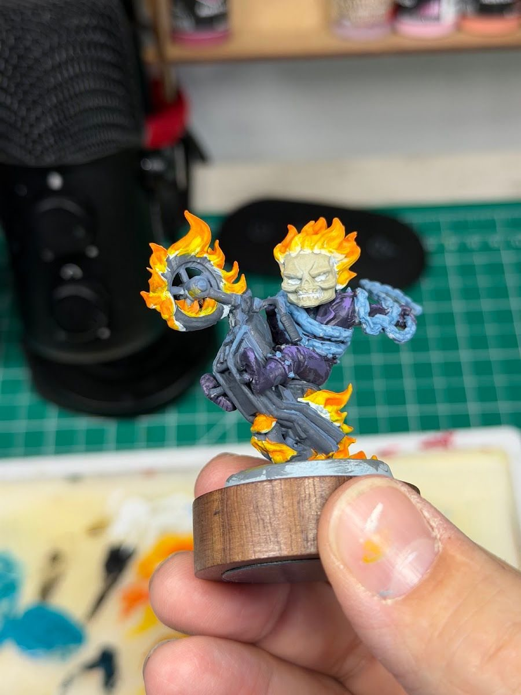

Here's a habit that costs nothing and improves almost every mini photo: don't put the mini square to the camera and take one shot. Rotate it a little, take several, and find the angle where it comes alive.
Why this matters
Sculptors design a pose to read from a particular direction. The face turns one way, the weapon points another, a cape sweeps across, the silhouette opens up. From the "right" angle, all of those lines work together and the character looks intentional. From a slightly wrong angle, the same mini looks stiff, cluttered or flat. Straight-on is rarely the right angle.
The short version
Set up your shot, then rotate the mini in small steps (think 15 to 20 degrees), taking a photo at each step. Look at them side by side and pick the one where the face, the silhouette and the main action all read together. That's your lead photo.
What to look for
- The face. Can you see it clearly? Is it catching the light?
- The silhouette. Are the arms, weapon and cape separated from the body, or tangled into one shape?
- The line of action. Does the pose feel like it's moving in one clear direction?
- The base. Does it support the pose from this side, or is the best detail hidden behind the mini?
A photo set, not just a photo
Once you've found the golden angle, it becomes the lead image. Then build out the rest of the set around it:
- Hero shot: the golden angle, face in focus.
- Three-quarter view: a turn to one side, showing depth and the side of the sculpt.
- Detail shots: the face, a weapon, a base detail, the part you're proudest of.
- Back or side: only if there's something worth seeing.
For my posts, I usually lead with the most dynamic, in-focus shot and put the "process" or wider shots later in the carousel. When I shot the new Marvel: Crisis Protocol builds, Quicksilver balanced on one toe with debris behind him was the obvious lead: that pose reads best from one direction.

It works backward too
Finding the golden angle also tells you something about painting. If you know the mini will mostly be seen (and photographed) from one side, that's where the strongest face highlights, the brightest OSL and the most careful edges should go. You don't need a formal test shoot to figure that out.
While I'm painting, I take pictures holding the mini in my hand, mostly just to capture the process. A nice side effect is that you can start to work out the best angles from those shots, well before the final photo.

Tradeoffs
- Games vs. photos. On the table, people see every side. The golden angle is for photos and for deciding where to spend your best brushwork, not an excuse to skip the back.
- Squads. For team shots, give each mini its own best angle within the group, then check the whole lineup reads together.
Checklist
- Rotate in small steps
- Take at least five or six shots
- Compare side by side
- Face visible, silhouette clean, action clear
- Lead with the best one, details after
Next: if you're ready to push past the phone, here's how I shoot on an old DSLR.